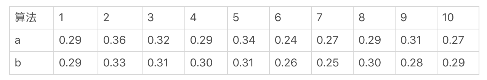
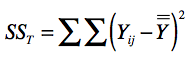
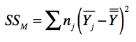
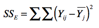
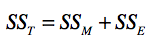
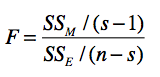
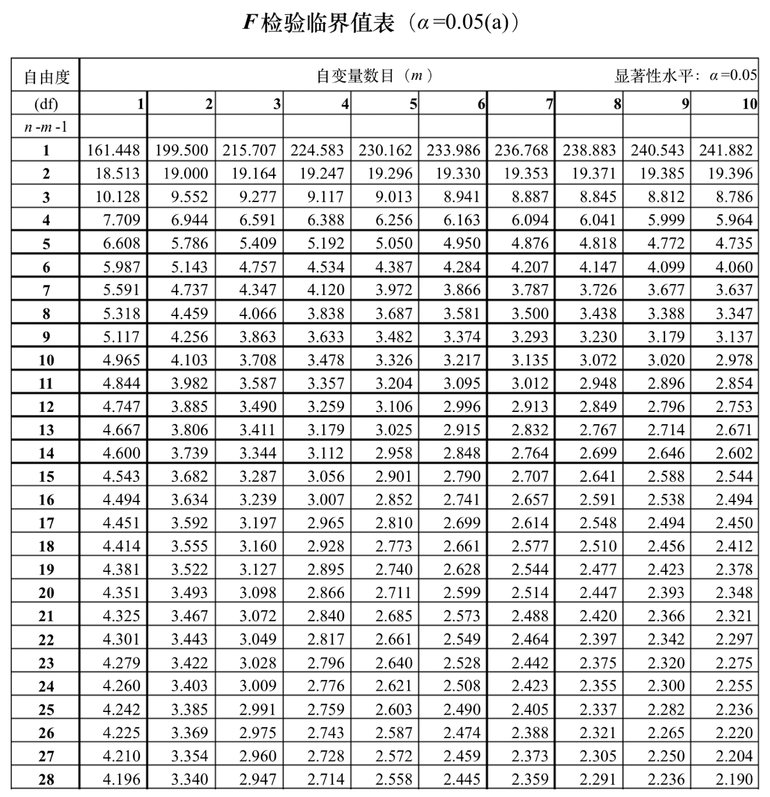

- 01 二进制：不了解计算机的源头，你学什么编程.md.html
- 02 余数：原来取余操作本身就是个哈希函数.md.html
- 03 迭代法：不用编程语言的自带函数，你会如何计算平方根？.md.html
- 04 数学归纳法：如何用数学归纳提升代码的运行效率？.md.html
- 05 递归（上）：泛化数学归纳，如何将复杂问题简单化？.md.html
- 06 递归（下）：分而治之，从归并排序到MapReduce.md.html
- 07 排列：如何让计算机学会“田忌赛马”？.md.html
- 08 组合：如何让计算机安排世界杯的赛程？.md.html
- 09 动态规划（上）：如何实现基于编辑距离的查询推荐？.md.html
- 10 动态规划（下）：如何求得状态转移方程并进行编程实现？.md.html
- 11 树的深度优先搜索（上）：如何才能高效率地查字典？.md.html
- 12 树的深度优先搜索（下）：如何才能高效率地查字典？.md.html
- 13 树的广度优先搜索（上）：人际关系的六度理论是真的吗？.md.html
- 14 树的广度优先搜索（下）：为什么双向广度优先搜索的效率更高？.md.html
- 15 从树到图：如何让计算机学会看地图？.md.html
- 16 时间和空间复杂度（上）：优化性能是否只是“纸上谈兵”？.md.html
- 17 时间和空间复杂度（下）：如何使用六个法则进行复杂度分析？.md.html
- 18 总结课：数据结构、编程语句和基础算法体现了哪些数学思想？.md.html
- 19 概率和统计：编程为什么需要概率和统计？.md.html
- 20 概率基础（上）：一篇文章帮你理解随机变量、概率分布和期望值.md.html
- 21 概率基础（下）：联合概率、条件概率和贝叶斯法则，这些概率公式究竟能做什么？.md.html
- 22 朴素贝叶斯：如何让计算机学会自动分类？.md.html
- 23 文本分类：如何区分特定类型的新闻？.md.html
- 24 语言模型：如何使用链式法则和马尔科夫假设简化概率模型？.md.html
- 25 马尔科夫模型：从PageRank到语音识别，背后是什么模型在支撑？.md.html
- 26 信息熵：如何通过几个问题，测出你对应的武侠人物？.md.html
- 27 决策树：信息增益、增益比率和基尼指数的运用.md.html
- 28 熵、信息增益和卡方：如何寻找关键特征？.md.html
- 29 归一化和标准化：各种特征如何综合才是最合理的？.md.html
- 30 统计意义（上）：如何通过显著性检验，判断你的A_B测试结果是不是巧合？.md.html
- 31 统计意义（下）：如何通过显著性检验，判断你的A_B测试结果是不是巧合？.md.html
- 32 概率统计篇答疑和总结：为什么会有欠拟合和过拟合？.md.html
- 33 线性代数：线性代数到底都讲了些什么？.md.html
- 34 向量空间模型：如何让计算机理解现实事物之间的关系？.md.html
- 35 文本检索：如何让计算机处理自然语言？.md.html
- 36 文本聚类：如何过滤冗余的新闻？.md.html
- 37 矩阵（上）：如何使用矩阵操作进行PageRank计算？.md.html
- 38 矩阵（下）：如何使用矩阵操作进行协同过滤推荐？.md.html
- 39 线性回归（上）：如何使用高斯消元求解线性方程组？.md.html
- 40 线性回归（中）：如何使用最小二乘法进行直线拟合？.md.html
- 41 线性回归（下）：如何使用最小二乘法进行效果验证？.md.html
- 42 PCA主成分分析（上）：如何利用协方差矩阵来降维？.md.html
- 43 PCA主成分分析（下）：为什么要计算协方差矩阵的特征值和特征向量？.md.html
- 44 奇异值分解：如何挖掘潜在的语义关系？.md.html
- 45 线性代数篇答疑和总结：矩阵乘法的几何意义是什么？.md.html
- 46 缓存系统：如何通过哈希表和队列实现高效访问？.md.html
- 47 搜索引擎（上）：如何通过倒排索引和向量空间模型，打造一个简单的搜索引擎？.md.html
- 48 搜索引擎（下）：如何通过查询的分类，让电商平台的搜索结果更相关？.md.html
- 49 推荐系统（上）：如何实现基于相似度的协同过滤？.md.html
- 50 推荐系统（下）：如何通过SVD分析用户和物品的矩阵？.md.html
- 51 综合应用篇答疑和总结：如何进行个性化用户画像的设计？.md.html
- 导读：程序员应该怎么学数学？.md.html
- 开篇词 作为程序员，为什么你应该学好数学？.md.html
- 数学专栏课外加餐（一） 我们为什么需要反码和补码？.md.html
- 数学专栏课外加餐（三）：程序员需要读哪些数学书？.md.html
- 数学专栏课外加餐（二） 位操作的三个应用实例.md.html
- 结束语 从数学到编程，本身就是一个很长的链条.md.html
- 捐赠
31 统计意义（下）：如何通过显著性检验，判断你的A_B测试结果是不是巧合？
你好，我是黄申，今天我们接着来聊显著性检验。
上一节，我介绍了差异显著性检验的概念，它是指从统计的角度来说，差异的产生有多大的概率、是不是足够可信。这点和数值差异的大小是有区别的。既然我们不能通过差异的大小来推断差异是否可信，那么有没有什么方法，可以帮助我们检验不同数据分布之间，是否存在显著差异呢？具体的方法有不少，比如方差分析（F检验）、t检验、卡方检验等等。我这里以方差分析为例，来讲这个方法是如何帮助我们解决AB测试中的问题。
方差分析
方差分析（Analysis of Variance, ANOVA），也叫F检验。这种方法可以检验两组或者多组样本的均值是否具备显著性差异。它有四个前提假设，分别是：
随机性：样本是随机采样的；
独立性：来自不同组的样本是相互独立的；
正态分布性：组内样本都来自一个正态分布；
方差齐性：不同组的方差相等或相近。
根据第三个前提，我们假设数据是正态分布，那么分布就有两个参数，一个是平均数，一个是方差。如果我们仅仅知道两个分组的平均值，但并不知道它们的方差相差多大，那么我们所得出的两个分布是否有显著差异的结论就不可靠了。
为了突出重点，我们先假设咱们的数据都符合上述四个前提，然后我来详细讲解一下方差分析的主要思想。最后，我会通过Python语言来验证各个假设和最终的F检验结果。
这里，我使用之前提到的A/B测试案例，通过方差分析来检验多种算法所产生的用户转化率有没有显著性差异。我们把“转化率”称为“因变量”，把“算法”称为“因素”。这里我们只有算法一个因素，所以所进行的方差分析是单因素方差分析。在方差分析中，因素的取值是离散型的，我们称不同的算法取值为“水平”。如果我们比较算法a和b，那么a和b就是算法这个因素的两个水平。
我们假设只有两种算法a和b参与了A/B测试。为了检验这些算法导致的转化率，是不是存在显著的差异，我们进行一个为期10天的测试，每天都为每种算法获取一个转化率。具体的数据我列在下面这张表格中。

我使用\(Y\_{ij}\)来表示这种表格中的数据，\(i\)表示第\(i\)次采样（或第\(i\)天），\(j\)表示第\(j\)种水平（或第\(j\)种算法）。以上面这张表格为例，\(Y\_{51}=0.34\)。
如果我们把每种算法导致的转化率看作一个数据分布，那么方差分析要解决的问题就是：这两个转化率分布的均值，是不是相等。如果我把两种数据分布的均值记作μ1和μ2，那么原假设H0就是μ1=μ2。而对立假设H1就是μ1 <> μ2。
之前我们提到，差异是不是显著性，关键要看这个差异是采样的偶然性引起的，还是分布本身引起的。方差分析的核心思想也是围绕这个展开的，因此它计算了三个数值：SST、SSM和SSE。SST表示所有采样数据的因变量方差（Total Sum of Squares），我把它的计算公式列在这里。

在这个公式中， \(Y\_{ij}\)如前所说，表示了第\(i\)天第\(j\)种算法所导致的转化率。而\(\\overline{\\overline Y}\)表示了10天里，2种算法全部20个数据的平均值。SSM表示数据分布所引起的方差，我们称它为模型平方和（Sum Of Squares for Model），它的计算公式如下：

在这个公式中，\(n\_{j}\)为水平\(j\)下的观测数量，在我们的案例中为10。\(\\overline Y\_{j}\)为第\(j\)个水平的平均值，在案例中为算法a或算法b在这10天的平均值。\(\\overline Y\_{j}-\\overline{\\overline Y}\)表示的是某个算法的采样均值和所有采样均值之间的差异，\(n\_{j}\)是相应的权重。我们这里的两个算法都被测试了10天，所以权重相同。根据我们的案例，SSM是0.00018。SSE表示采样引起的方差，我们称它为误差平方和（Sum of Squaress for Error）。它的计算公式如下：

根据我们的案例，SSE是0.01652。我们刚刚介绍的三个统计量，SST、SSM和SSE这三者的关系其实是这样的：

你可以把这三者的公式代入，自己证明一下等式是否成立。由此可以看出，SST是由SSM和SSE构成的。如果在SST中，SSM的占比更大，那么说明因素对因变量的差异具有显著的影响；如果SSE的占比更大，那么说明采样误差对因变量的差异具有更显著的影响。我们使用这两部分的比例来衡量显著性，并把这个比例称为F值。具体公式如下：

在这个公式中，s是水平的个数，n为所有样本的总数量，s-1为分布的自由度，n-s为误差的自由度。你可能对自由度这个概念比较陌生，这里我稍微解释一下。
自由度（degree of freedom），英文缩写是df，它是指采样中能够自由变化的数据个数。对于一组包含n个数据的采样来说，如果方差是一个固定值，那么只有n-1个数据可以自由变化，最后一个数的取值是给定的方差和其他n-1个数据决定的，而不由它自己随意变化，所以自由度就是n-1。这也是为什么在计算一组数的方差时，我们在下面这个公式中使用的除数是n-1，而不是n。
回到方差分析，对于SSM来说，如果SSM是固定的，那么对于s个水平来说，只能有s-1个组数据自由变化，而最后一组数据必须固定，所以对应于SSM的自由度为s-1。对于SSE来说，如果SSE是固定的，那么对于n个采样、s个水平数据来说，只有n-s个数据是可以自由变化的。因为每个水平中，都要有一个数据需要保证该组的平均值\(\\overline Y\_{j}\)而无法自由变化。
在我们的案例中，s为不同算法的个数，也就是水平的个数s为2，采样数据的个数n为20，所以分布的自由度为2-1=1，误差的自由度为20-2=18。
在我们的案例中，F=(0.00018/(2-1))/(0.01652/(20-2))=0.196125908。有了F值，我们需要根据F检验值的临界表来查找对应的P值。我列出了这张表的常见内容，你可以看看。

通过这张表以及n和m的值，我们可以找到，在显著性水平α为0.05的时候，F值的临界值。如果大于这个临界值，那么F检验的P值就会小于显著性水平α，证明差异具有显著性。
在咱们的案例中，n=20，m=s-1=1，所以对应的F值为4.414。而我们计算得到的F值为0.196，远远小于4.414，因此说明差异没有显著性。虽然算法a所导致的平均转化率要比算法b的相对高出约2%（要注意，2%的相对提升在转化率中已经算很高了），但是由于差异没有显著性，所以这个提升的偶然性很大，并不意味着算法a比算法b更好。
如果需要，你可以在网上相关的统计资料里查找到完整的F检验临界值表。
使用Python代码进行验证
除了手动的计算，我们还可以用一些Python的代码来验证手动计算是不是准确。
首先，我们要确保自己安装了Python的扩展包statsmodels。如果没有安装，你可以在命令行中输入下面这行：
pip install -U statsmodels
我们可以把下列数据输入一个oneway.csv文件。
algo,ratio
a,0.29
a,0.36
a,0.32
a,0.29
a,0.34
a,0.24
a,0.27
a,0.29
a,0.31
a,0.27
b,0.29
b,0.33
b,0.31
b,0.30
b,0.31
b,0.26
b,0.25
b,0.30
b,0.28
b,0.29
安装完了statsmodels，并建立了数据文件oneway.csv，我们就可以运行下面这段Python代码来进行F检验了。
import pandas as pd
from statsmodels.formula.api import ols
from statsmodels.stats.anova import anova_lm
import scipy.stats as ss
# 读取数据，d1对应于算法a，d2对应于算法b
df = pd.read_csv("/Users/shenhuang/Data/oneway.csv") #设置为你自己的文件路径
d1 = df[df['algo'] == 'a']['ratio']
d2 = df[df['algo'] == 'b']['ratio']
# 检测两个水平的正态性
print(ss.normaltest(d1))
print(ss.normaltest(d2))
# 检测两个水平的方差齐性
args = [d1, d2]
print(ss.levene(*args))
# F检验的第一种方法
print(ss.f_oneway(*args))
# F检验的第二种方法
model = ols('ratio ~ algo', df).fit()
anovat = anova_lm(model)
print(ano
我们假设用于A/B测试的两个算法是相互独立且随机的，所以这里只检测了正态分布性和方差齐性。
其中，ss.normaltest分别测试了两个水平的正态分布性，两次结果如下：
NormaltestResult(statistic=0.16280747339563784, pvalue=0.9218214431590781)
NormaltestResult(statistic=0.4189199849120419, pvalue=0.8110220857858036)
ss.normaltest的原假设是数据符合正态分布，两次检验P值都是远远大于0.05的，所以原假设成立，这两者都符合正态分布。
而ss.levene分析了两者的方差齐性，同样P值都是远远大于0.05，因此符合方差齐的前提。
LeveneResult(statistic=0.7944827586206901, pvalue=0.38450823419725666)
ss.f_oneway和anova_lm都可以进行F检验。ss.f_oneway给出的结果比较简洁。
F_onewayResult(statistic=0.19612590799031476, pvalue=0.663142430745588)
而anova_lm提供了更多的信息，但是两种F检验函数都证明了我们之前的手动推算结果是正确的。
df sum_sq mean_sq F PR(>F)
algo 1.0 0.00018 0.000180 0.196126 0.663142
Residual 18.0 0.01652 0.000918 NaN NaN
总结
方差分析可以帮助我们检测差异的显著性，它分析的内容是受一个或多个因素影响的因变量在不同水平分组的差异。不过单因素的方差分析要求因变量属于正态分布总体，并具有方差齐性。如果因变量的分布明显的是非正态，或者方差的差异很显著，那么我们就不能直接使用这种方法。对于方差不齐的情况，我们可以选择适当的函数，例如对数、倒数等等，对原始数据进行转换，直到方差齐性变得显著，或者剔除明显属于“均值±标准差”之外的数据。
当然，对于非正态分布的数据，我们也可以使用非参数的分析。非参数检验是在总体的方差知道很少的情况下，利用样本数据对总体分布形态等进行推断的方法。名字中的“非参数”的由来，就是因为这种检验方法在推断过程中不涉及有关总体分布的参数，而只是进行分布位置、分布形状之间的比较，因此不受总体分布的限定，适用范围比较广。常见的非参数检验包括二项分布检验、K-S检验、卡方检验等等。
思考题
请尝试使用Python语言实现你自己的方差分析函数，然后通过测试数据来比较你实现的函数和Python扩展包里的函数（例如statsmodels.stats.anova.anova_lm或scipy.stats.f_oneway）。
欢迎留言和我分享，也欢迎你在留言区写下今天的学习笔记。你可以点击“请朋友读”，把今天的内容分享给你的好友，和他一起精进。
© 2019 - 2023 Liangliang Lee. Powered by gin and hexo-theme-book.